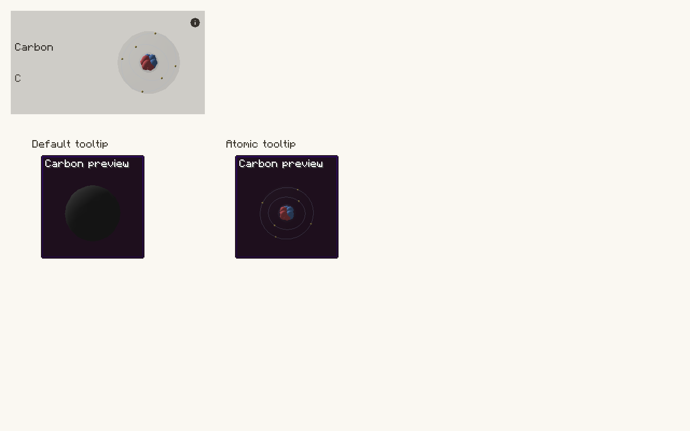

Avogadro guide · Minecraft 1.12.2 / Cleanroom
Tell the examiner exactly which isotope and charge you intend. Nuclear data is separate from the structure’s element labels and bond graph.
Examples are methods inside the downloadable companion classes. Copy the methods you need into your own class and keep the imports at the top. GuideModels contains the reusable chemical recipes; GuideTasks contains the operations. These files are documentation examples, not built-in library content.
Java model recipes · Java operations · Complete Groovy model script · Groovy client helpers
The complete Groovy model script can be saved as groovy/postInit/avogadro_examples.groovy. It includes the reusable GuideModels class and registers all ten chemical examples through the reloadable script registry. The separate client helper download is a reference for client integrations: keep it out of common postInit scripts and dedicated-server entry points. Java users should likewise copy common operations into their common class and keep screen/export operations in a client class.
import io.github.wurtzitane.avogadro.api.*;
import io.github.wurtzitane.avogadro.molecule.*;
// Client code only:
import io.github.wurtzitane.avogadro.api.client.*;
import io.github.wurtzitane.avogadro.client.export.*;
import java.util.List;
import java.util.Map;| Value | Meaning | Example |
|---|---|---|
| Atomic number Z | Proton count | Carbon: 6 |
| Neutrons N | Neutron count | Carbon-13: 7 |
| Charge | Positive means electrons removed | Na+: +1 |
| Shell counts | Electrons in each authored shell; sum must equal Z − charge | Na+: [2, 8] |
| Atom index | Zero-based position in the current fragment | Methanol’s carbon in our recipe: 0 |
| JSON field / location | Meaning | Example |
|---|---|---|
atomic_number | Proton count. | Carbon: 6 |
neutrons | Neutron count. | Carbon-13: 7 |
charge | Positive means electrons removed; defaults to zero. | Na+: 1 |
electron_shells | Electrons in each shell; the sum must equal atomic_number − charge. | Na+: [2, 8] |
atom_configurations["0"] or local atoms[].nuclear | Assign atomic data to a specific atom. For network fragments, use local nuclear data. | The string key "0" selects the first atom. |
Java · method inside your host class; imports and full files below.
public static StructureFragment carbon13Methanol() {
return GuideModels.methanol().edit()
.atomConfiguration(0, new AtomicConfiguration(6, 7, 0, List.of(2, 4))).fragment();
}Groovy · same API; place methods in your script or client helper as described.
static StructureFragment carbon13Methanol() {
return GuideModels.methanol().edit()
.atomConfiguration(0, new AtomicConfiguration(6, 7, 0, List.of(2, 4))).fragment();
}JSON · one definition per file unless a different destination is shown.
{
"copy": "guide:methanol",
"atom_configurations": {
"0": {
"atomic_number": 6,
"neutrons": 7,
"charge": 0,
"electron_shells": [
2,
4
]
}
}
}Java · method inside your host class; imports and full files below.
public static MoleculeSpec sodiumIon() {
return AvogadroApi.builder("guide:sodium_ion").name("Sodium ion")
.atom("Na", 0, 0, 0).noBonds().atomConfiguration(0, 11, 12, 1, 2, 8).build();
}Groovy · same API; place methods in your script or client helper as described.
static MoleculeSpec sodiumIon() {
return AvogadroApi.builder("guide:sodium_ion").name("Sodium ion")
.atom("Na", 0, 0, 0).noBonds().atomConfiguration(0, 11, 12, 1, 2, 8).build();
}JSON · one definition per file unless a different destination is shown.
{
"name": "Sodium ion",
"atoms": [
{
"e": "Na",
"x": 0,
"y": 0,
"z": 0
}
],
"bonds": [],
"atom_configurations": {
"0": {
"atomic_number": 11,
"neutrons": 12,
"charge": 1,
"electron_shells": [
2,
8
]
}
}
}Use element(symbol,Z,N,shells…) for a neutral per-symbol default, or atomConfiguration for a specific atom/ion. The salt example supplies Na+ and Cl− separately. SMILES isotope/charge notation does not automatically populate the examiner’s nuclear data.
| Validation | Rule |
|---|---|
| Protons | 0–1,000; zero requires neutrons and zero charge |
| Neutrons | 0–10,000 |
| Shells | At most 32; each shell respects 2n² capacity |
| Electrons | Shell sum equals Z − charge |
| Charge | −1,000 through Z |
| Editing to another element | Clears the old atom-specific configuration |
| Missing data | No guessed neutron count from rounded atomic weight |
Java · method inside your host class; imports and full files below.
public static MoleculeSpec waterAndEthanol() {
// Component references add inspection links, not geometry.
return AvogadroApi.builder("guide:water_ethanol_pair").name("Water and ethanol")
.smiles("O.CCO").component("guide:water").component("guide:ethanol")
.classification(MoleculeClassification.MIXTURE)
.inspectionMetadata("note", "One molecule of each; an illustrative pair, not a bulk concentration.")
.build();
}Groovy · same API; place methods in your script or client helper as described.
static MoleculeSpec waterAndEthanol() {
// Component references add inspection links, not geometry.
return AvogadroApi.builder("guide:water_ethanol_pair").name("Water and ethanol")
.smiles("O.CCO").component("guide:water").component("guide:ethanol")
.classification(MoleculeClassification.MIXTURE)
.inspectionMetadata("note", "One molecule of each; an illustrative pair, not a bulk concentration.")
.build();
}JSON · one definition per file unless a different destination is shown.
{
"name": "Water and ethanol",
"smiles": "O.CCO",
"components": [
"guide:water",
"guide:ethanol"
],
"inspection": {
"classification": "MIXTURE",
"note": "One molecule of each; illustrative, not a bulk concentration."
}
}Register the component targets too. References add inspection links; they do not append atoms. The disconnected SMILES supplies the actual geometry. A pair of molecules does not define a real solution’s concentration.
Java · method inside your host class; imports and full files below.
public static MoleculeWeight.Result mass() {
// Uses standard element weights, not isotope-specific measured masses.
return AvogadroApi.weight("C9H8O4");
}Groovy · same API; place methods in your script or client helper as described.
static MoleculeWeight.Result mass() {
// Uses standard element weights, not isotope-specific measured masses.
return AvogadroApi.weight("C9H8O4");
}result.molarMass() is grams per mole; gramsPerEntity() is grams per entity. Formatting helpers provide ready-to-show text. Unknown element weights can make the result unavailable: check for null. Network mass belongs to the selected finite realization; a bulk network has no single molecular mass.
In HEI, a single-atom element card shows its nucleus, electrons, and cloud. Click it to open the atom viewer directly, or drag to rotate it. Other molecule cards open their examiner with Shift+N. Click an atom there for details; Space/Pause freezes rotation and electron motion.
Item tooltips keep the solid molecular ball by default. Hold Left Ctrl to show a single element’s atomic model at the same size, position, and rotation. In Mod Options → Avogadro → Tooltips → Atomic tooltip key mode, choose HOLD or TOGGLE. Toggle lasts until the menu closes or loses focus. Rebind Atomic tooltip preview in Controls → Avogadro. This affects single-atom elements; O2 and other multi-atom structures keep their molecular preview.
At ordinary molecule zoom, atom balls remain opaque; close inspection reveals their internal cloud/particle view. Particle visibility and viewer settings are presentation choices, not changes to the bond graph. Cards, tooltips, the atom viewer, and exports use the same supplied isotope and charge data.

The atomic export example uses the same supplied data. For invented nuclei, see the clearly labeled fictional appendix.